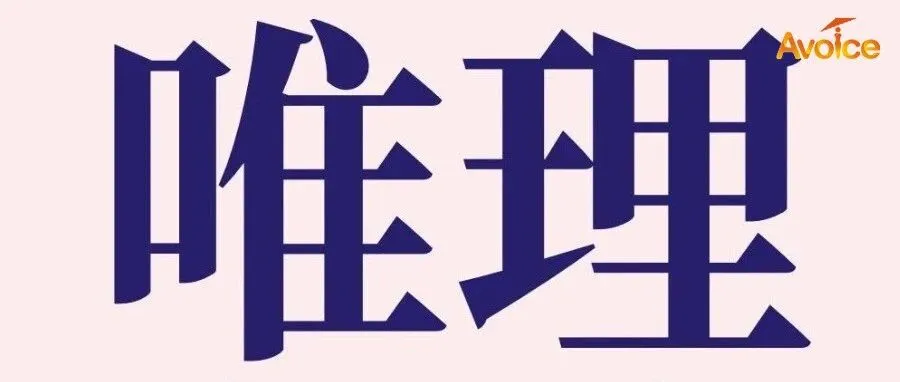
以下文章来源于Veritas唯理 ，作者Veritas China
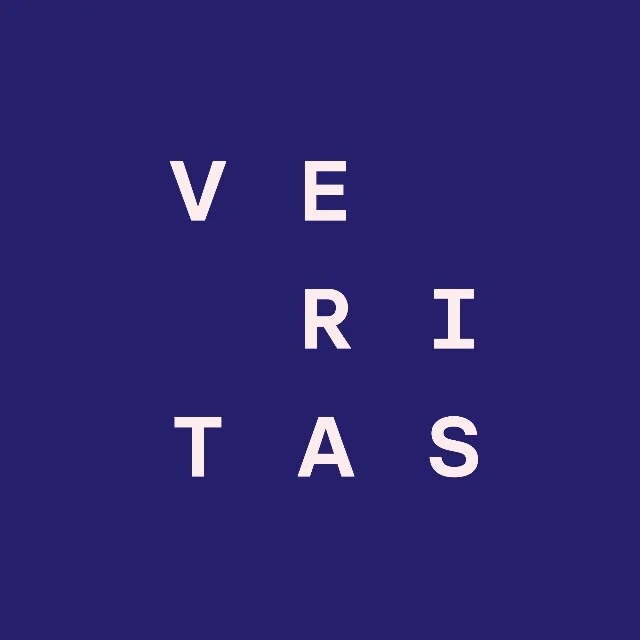
致力于推广博雅教育的学生组织


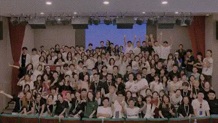
十载同行，求索未央。
在过去十年间，
我们持续探寻
博雅教育的可能性与可及性，
让思考交错生长，堆迭出
桥一般的层累和脉络。
如果你也渴望分享所思所学，
构建独立而深刻的课程，
与新世界和旧问题对话、
与志同道合的伙伴同行，
如果你也对教育充满热情，
那么，欢迎你作为讲师加入我们，
一同开启书院的下一个十年！
目录
一 | 唯理中国介绍
二 | 为什么加入我们？
三 | 过往课程示例
四 | 招募详情
五 | 报名步骤
一
唯理中国介绍
唯理中国是海内外高校中国学子联合组建的非营利学术组织，致力于在中国推广博雅教育 (Liberal Arts Education)。
抱着推广博雅教育的愿景，自2015年来，我们:
开设了超过180门线下课程和50余期线上课程，吸引了上千位来自中国各地的高中生和大学生参与;
自2018年起运营“唯理对谈”播客、“唯理通讯”新闻信和“专题研讨屋”等线上内容，已为上万名读者和听众免费提供高质量的学术和时事信息;
与唯理历届活动的参与者、讲师和组织者共同营造了活跃的学术社群与其论坛“唯理共话”。
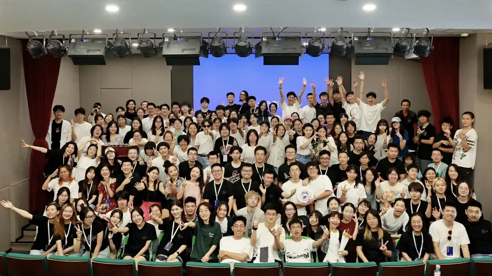
唯理书院2024参与者合照
书院信息
唯理中国将于2025年暑假举办为期9天的线下暑期书院，致力于打造一段沉浸式的博雅教育体验。书院将开设约30门来自不同学科领域的小班研讨类课程，参与者将根据自己的时间安排与学术能力从中选择2-4门课程参加。此外，书院也将组织丰富的课外活动，在学术圆桌、电影放映等活动中创造参与者之间智识交流的平台。
即日起，唯理书院2025将正式启动讲师招募。暑期书院暂定于七月底至八月初在上海举办，详情请见讲师招募表格。
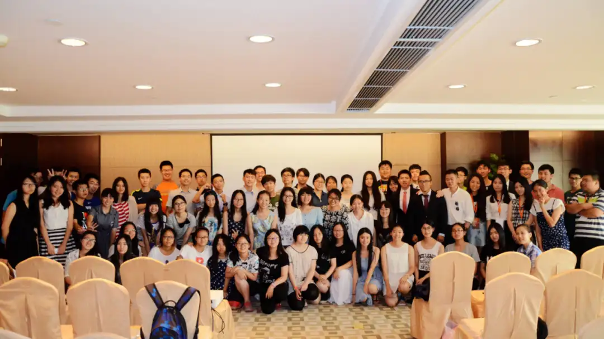
唯理书院2015参与者合照
往年书院信息参考
唯理书院2024
结营回顾
去阅读 >>
二
为什么加入我们？
沉浸的学术交流平台
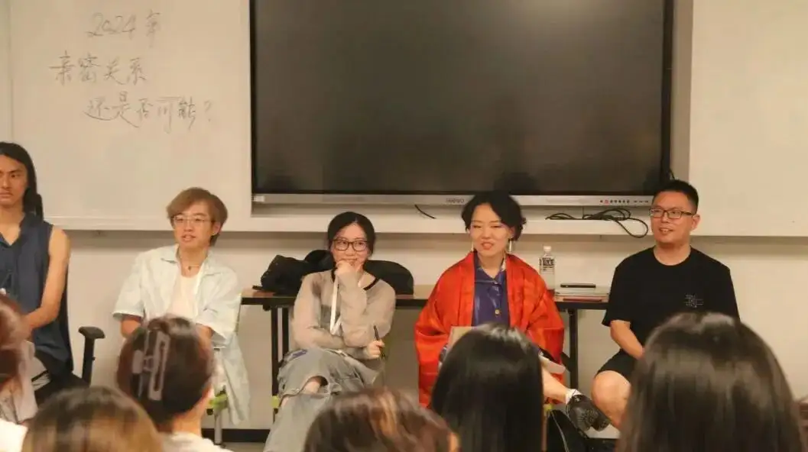
唯理书院2024晚间活动
在暑期书院的9天里，你将结识一群对学术抱有同样热情的讲师、学员、和组委，高密度地交流与讨论你感兴趣的学术领域。在书院，你不仅是授课者，更是学术对话的推动者与创造者。学员不会只是知识的接受者，而是在思考、提问和讨论中积极构建课堂内容，与你一道共同创造生动而富有张力的学术空间。在书院期间，你也将有丰富的机会参与乃至组织多样化的晚间课外活动，包括但不限于答疑时间（office hour）、专题研讨会（panel）、嘉宾分享、电影放映、艺术工作坊等。这些思想的碰撞与连结，往往不会止步于书院的 9 天，而是延续至更远的学术旅程，成为你同行路上的知交伙伴。
在教学相长中发展自身学术兴趣
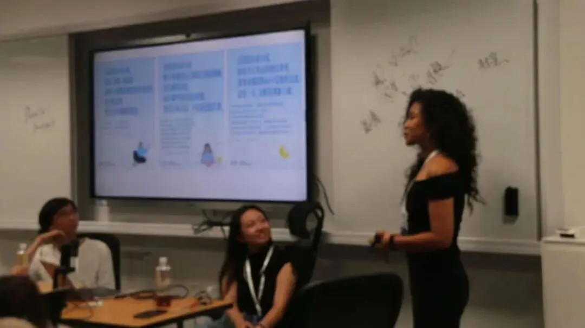
唯理书院2024进行中
讲师将有机会自行设计一门包含八个课时 的短期课程，向有兴趣的高中生和大学生介绍自己感兴趣的学术领域。许多过往讲师发现参加唯理中国的活动提高了自己的教学能力、丰富了教学经验、加深了自己对于学术问题的理解，并且为自己未来的学术发展提供了帮助。
以非营利方式推广可及的博雅教育
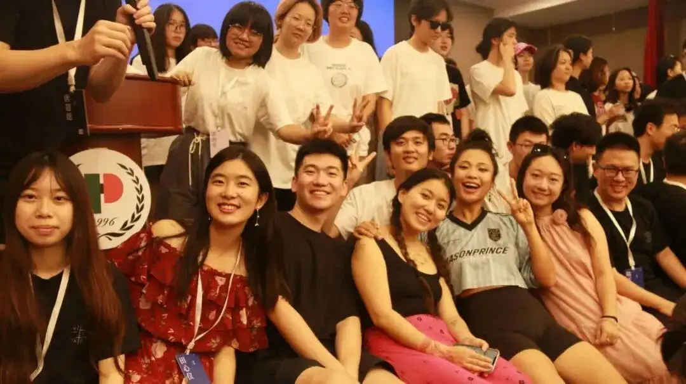
唯理书院2024结营仪式
十年来，唯理坚持非营利学生组织的运行模式，致力于为不同背景的人群提供可及的博雅教育资源和学术交流平台。暑期书院将收取平价的费用，并将一切盈余用于维持组织的未来运营。同时，唯理中国长期为有财务需求的参与者提供参加线上线下项目的助学金。今年的暑期书院也将延续这一传统，为有需要的参与者提供学费减免、免费名额、及生活补助。
为中国公众提供多元的学术资源和视角
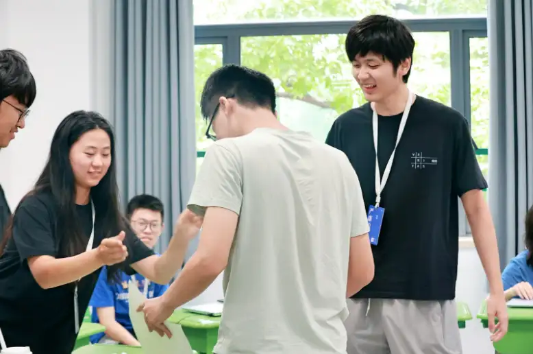
唯理书院2024课堂
唯理中国坚持联系前沿学术动态与公众关心的话题和学生日常的学习，通过多种途径为中国学子和公众提供了多元化的学术资源和视角，例如唯理对谈、专题研讨屋和唯理通讯。我们希望通过博雅教育提高参与者的批判性思考能力，启发未来讨论学术和社会议题的潜能。
来自讲师
来自学员
三
过往课程示例
唯理书院的课程设置广泛，我们一贯欢迎来自所有学科背景的讲师加入书院。我们曾开设包括但不限于人类学、政治学、社会学、经济学、心理学、语言学、数学、物理学、统计学、法学、历史、哲学、艺术史、古典学、性别研究、 艺术、电影、摄影、戏剧等，超过 20 个学科的课程。我们也鼓励讲师打破传统学科界限，开设跨专业，新兴学科，或话题导向的跨学科课程。
过往课程详情参见
唯理书院2024
课程汇总
去阅读 >>
唯理书院2023
课程汇总
去阅读 >>
四
招募详情
唯理讲师需要：
1
设计一门以讨论为主、适合高年级高中生与低年级大学生参与的课程
2
在书院开始前与我们一同协助学生准备课程、并参与讲师见面会 orientation
3
在书院期间开设自己的课程，参加至少两次讲师会议，并每天开设答疑时间 office hour，解答参与者关于课程的疑问和交流
我们希望讲师：
1
有大学本科在读或以上学历
2
对课程内容有扎实的学术了解和强烈兴趣
3
认同唯理中国的教育理念，对博雅教育有理解和热忱
4
认真负责，接受并鼓励多元视角和观点，擅长沟通与合作
5
热爱教学，能够用具有启发性的方式引导课堂
你能收获什么：
1
合理的工资补贴
2
提高教学能力、从教育者的角度重新理解自己的学科
3
旁听其它课程、参与或发起活动期间的课外活动，如讨论会、嘉宾讲座等
4
与志同道合的活动参与者交流切磋
5
结交一群关注教育议题、充满热情的行动伙伴，在活动结束后与唯理社群保持长期联系
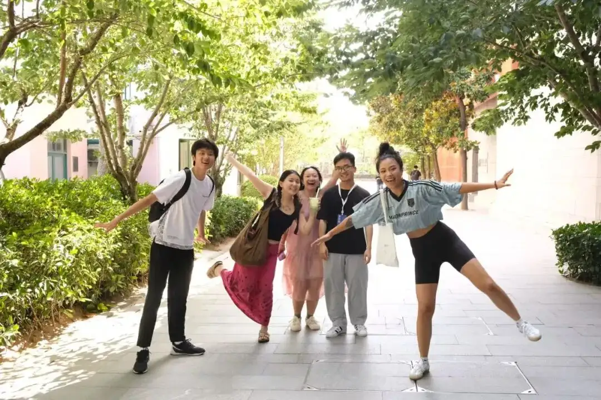
唯理书院2024部分讲师
五
报名步骤
点击文末“原文链接”或访问唯理中国网站veritaschina.org，点击“线上/线下讲师申请”，勾选“暑期书院”后填写申请表。
2025暑期书院讲师申请截止时间： 北京时间2025年3月30日23:59*
提交申请表后，我们将通过邮件与你取得联系。
唯理中国致力于为所有成员提供安全、友好、平等的教学与工作环境。我们十分欢迎女性、主要在大陆接受教育、计划开设数理类课程、或来自非学术背景的讲师申请者在书院开设课程，共同丰富书院的课堂与对话。我们将会对所有讲师申请以相同的标准进行审核。
*除暑期书院外，唯理中国的线上课程讲师招募全年开放。如果你因个人安排无法出席暑期书院，但仍对作为讲师参与唯理中国的活动感兴趣，我们欢迎你申请线上课程。如您有意向，请您点击“线上/线下讲师申请”后，勾选“线上课程”填写报名表。
我们期待你的加入！
卡片制作
陈昱彤
推送编辑
田星宇Kiri
组织|校对
唐超挺
相册整理
严书菡
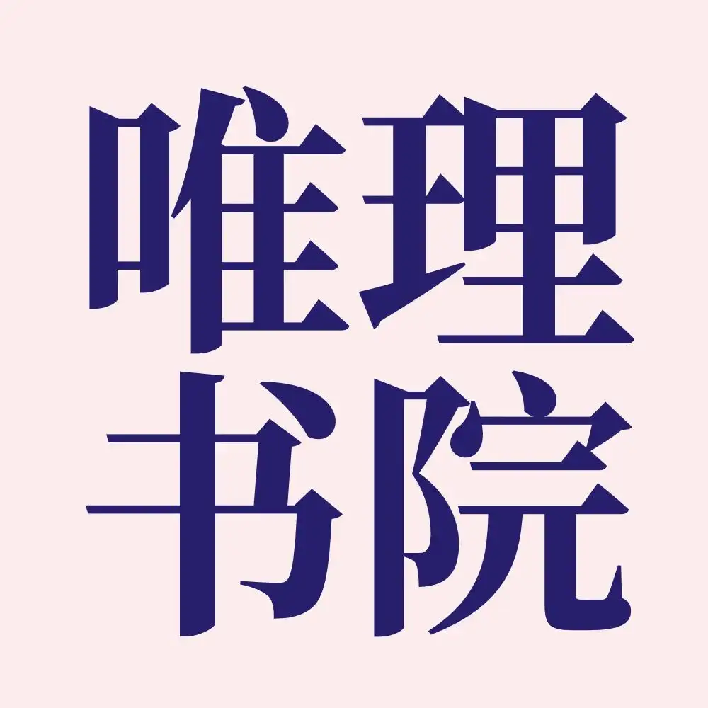
设计规范
王嘉文
(观点°工作室)
唯理暑期书院 | 工作组
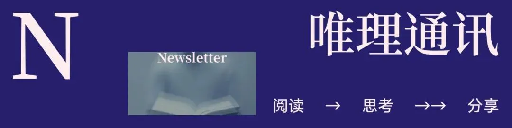
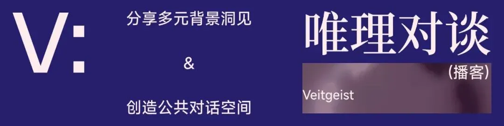
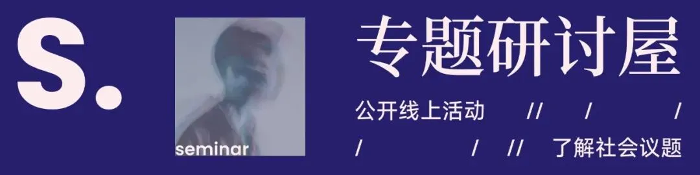
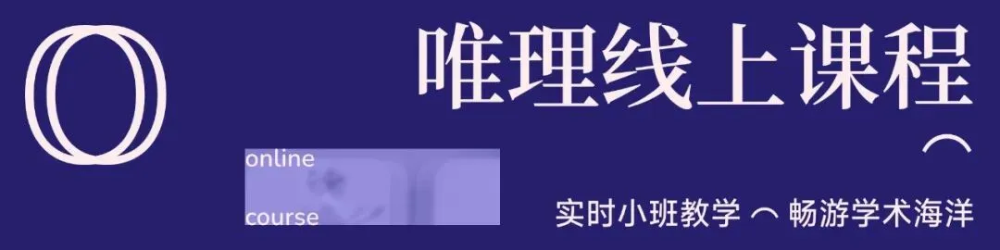
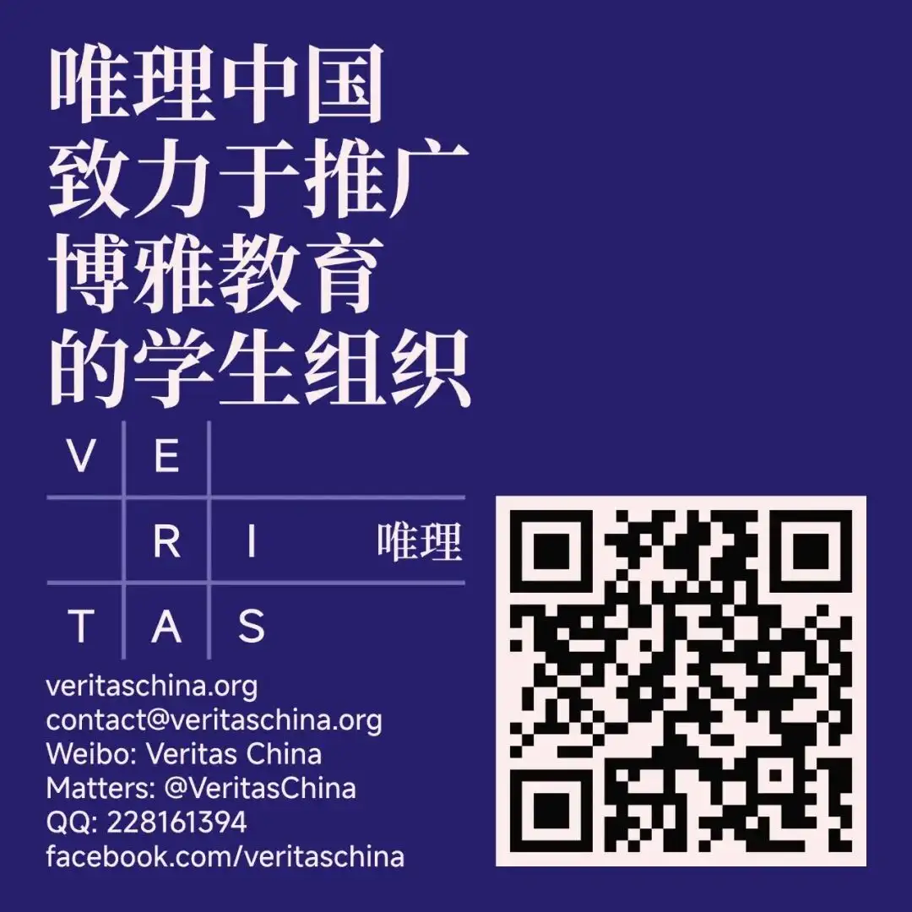